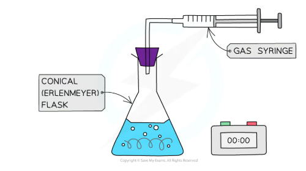
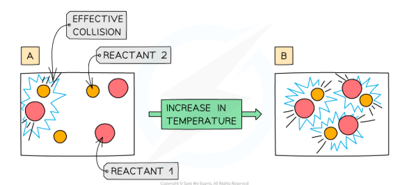
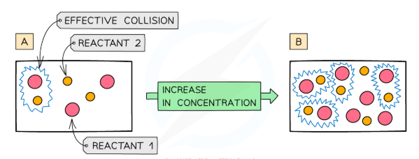
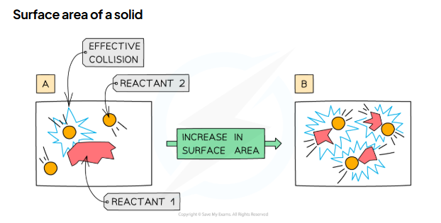
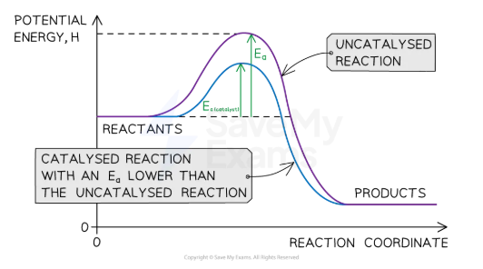
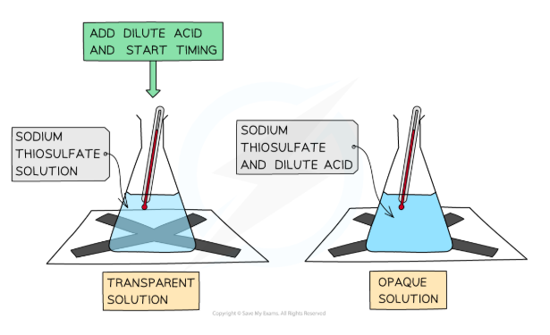
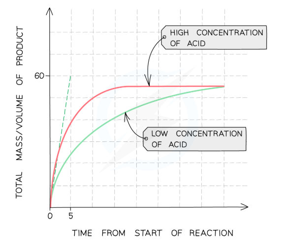

The rate of reaction is the change in the amount of a reactant or product per unit time.
Rate = change in quantity ÷ time
Units of rate
What you measure
Unit of rate
Volume of gas produced
cm³/s
Mass change
g/s
Concentration
mol/dm³/s
Mean rate = total change ÷ total time (one value across the whole reaction). Initial rate = rate at t = 0 — steepest point on the graph.
2. Measuring Rate of Reaction
Method
What is measured
Example reaction
Key apparatus
Gas syringe
Volume of gas (cm³) at intervals
Marble chips + HCl → CO₂
Conical flask, bung, delivery tube, gas syringe
Mass loss
Decrease in mass (g) at intervals
Marble chips + HCl; CO₂ escapes
Conical flask, balance, cotton wool plug
Disappearing cross
Time for precipitate to obscure cross
Na₂S₂O₃ + HCl → S precipitate
Conical flask on paper cross, stopwatch
Gas syringe vs collecting over water: Use a gas syringe for CO₂ — CO₂ dissolves in water, so collecting over water gives an underestimate of the true volume produced.
The bung is critical. Without a bung the gas escapes before reaching the syringe. Every apparatus diagram must show a sealed flask. Missing the bung = 0 marks for gas collection.

Gas syringe apparatus: CO₂ from marble chips + HCl is collected and measured
3. Collision Theory
Key terms
Collision theory: reactions only happen when particles collide with sufficient energy and the correct orientation
Successful collision: one that actually results in a reaction
Activation energy (Eᵃ): the minimum energy colliding particles must have for a reaction to occur
Two conditions for a successful collision
Particles must collide with energy ≥ activation energy (Eᵃ)
Particles must collide with the correct orientation
Most collisions are unsuccessful — particles simply bounce off each other unchanged.

Temperature ↑: particles move faster → more frequent collisions AND more particles have energy ≥ Eᵃ

Concentration ↑: more particles per cm³ → collisions happen more frequently (frequency effect only)
Frequency vs energy: Concentration, pressure and surface area only increase the frequency of collisions — NOT the energy. Only temperature changes both. Writing “particles have more energy” for concentration or surface area loses marks every time.
4. Factors Affecting Rate
Factor
Frequency ↑?
Energy ↑?
Net effect
Temperature ↑
✓ Yes
✓ Yes (more ≥ Eᵃ)
Large increase
Concentration ↑
✓ Yes
✗ No
Increases
Pressure ↑ (gases)
✓ Yes
✗ No
Increases
Surface area ↑
✓ Yes
✗ No
Increases
Catalyst added
✗ No
Lowers Eᵃ
Increases

Surface area ↑: more solid particles exposed → acid collides with surface more frequently
Same mass = same final amount of product. Crushing marble speeds the reaction but does NOT change the total CO₂ produced. On a graph, both curves reach the same plateau height — they just get there at different speeds.
5. Catalysts
Full definition — all 4 parts needed for full marks
Speeds up the rate of reaction
Does not change the products
Is chemically unchanged at the end
Is unchanged in mass at the end
How a catalyst works
Provides an alternative reaction pathway with a lower activation energy (Eᵃ). A greater proportion of colliding particles now have energy ≥ Eᵃ, so more collisions are successful per second.

A catalyst lowers Eᵃ — same reactants and products energy level, just a lower peak
Process
Equation
Catalyst
Haber process
N₂ + 3H₂ ⇋ 2NH₃
Iron (Fe)
Contact process
2SO₂ + O₂ ⇋ 2SO₃
Vanadium(V) oxide (V₂O₅)
Decomposition of H₂O₂
2H₂O₂ → 2H₂O + O₂
Manganese(IV) oxide (MnO₂)
A catalyst is NOT a reactant. It does not change the amount of product, the products formed, or the overall energy change (ΔH). Never write “the catalyst is used up.”
6. Core Practical CP6: Investigating Rate of Reaction
Method A: marble chips + HCl (gas collection)
CaCO₃(s) + 2HCl(aq) → CaCl₂(aq) + H₂O(l) + CO₂(g)
Measure fixed volume of HCl into flask
Add marble chips; immediately replace bung
Start stopwatch; record CO₂ volume every 30 s
Plot volume (y) vs time (x); compare gradients
IV: conc./size of chips | DV: vol. CO₂ | CV: temp, mass of chips
Look down through flask; stop when cross disappears
Rate = 1/time
IV: temperature | DV: time (then 1/t) | CV: volumes, conc., same observer

Left: transparent solution — cross visible through flask. Right: sulfur precipitate forms — solution becomes opaque and cross disappears.
SO₂ safety: Method B produces sulfur dioxide — toxic and a respiratory irritant. Use a well-ventilated room. Do not heat above 60 °C.
Why 1/time? Time ∝ 1/rate. A shorter time = faster reaction = larger 1/time = higher point on your graph. Plot 1/time (y) vs temperature (x).
7. Rate Graphs
Shape of a rate curve
Start: steepest gradient — reactants at maximum concentration, highest collision frequency
Middle: curve flattens as reactants are used up
Plateau: flat — reaction stopped, limiting reactant fully used up
Change (same amount of reactant)
Gradient
Plateau
Higher temp / conc / catalyst / smaller pieces
Steeper
Same height
Less reactant (same conditions)
Similar
Lower

Same amount of marble chips — both curves level off at the same height
Most common drawing error: When sketching a faster curve (same amount of reactant), candidates draw the plateau higher. It must level off at the same height — same reactant in means the same total amount of product out.
8. Model Answers
Explain why increasing the concentration of HCl increases the rate of reaction with marble chips. (2 marks)
Model answer
There are more acid particles in the same volume of solution.
The frequency of collisions between acid particles and the marble increases, so more successful collisions occur per second and the rate increases.
Explain why increasing the temperature increases the rate of reaction. (3 marks)
Model answer
The particles gain kinetic energy and move faster, so they collide more frequently.
A greater proportion of particles now have energy greater than or equal to the activation energy (Eᵃ).
More collisions are successful per unit time, so the rate of reaction increases.
Explain how a catalyst increases the rate of reaction. (3 marks)
Model answer
The catalyst provides an alternative reaction pathway with a lower activation energy.
A greater proportion of colliding particles now have energy ≥ activation energy.
More collisions are successful per second, so the rate increases.
Calculate the mean rate of production of CO₂ between 0 s and 80 s. Volume at 0 s = 0 cm³. Volume at 80 s = 48 cm³. (3 marks)
Model answer
Change in volume = 48 − 0 = 48 cm³
Change in time = 80 − 0 = 80 s
Mean rate = 48 ÷ 80 = 0.60 cm³/s
Explain why using smaller marble chips increases the rate of reaction with hydrochloric acid. (2 marks)
Model answer
Smaller chips have a greater surface area to volume ratio, so more marble particles are exposed to the acid at any one time.
The frequency of collisions between acid particles and the marble increases, so more successful collisions occur per second.